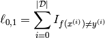
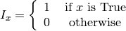
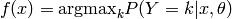
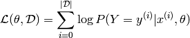
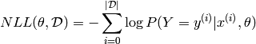
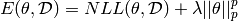
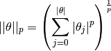

入门（Getting Started）
这个教程并不是为了巩固研究生或者本科生的机器学习课程，但我们确实对一些重要的概念（和公式）做了的快速的概述，来确保我们在谈论同个概念。同时，你也需要去下载数据集，以便可以跑未来课程的样例代码。
下载
在每一个学习算法的页面，你都需要去下载相关的文件。加入你想要一次下载所有的文件，你可以克隆本教程的git仓库。
git clone git://github.com/lisa-lab/DeepLearningTutorials.git
数据集
MNIST数据集(mnist.pkl.gz)
MNIST是一个包含60000个训练样例和10000个测试样例的手写数字图像的数据集。在许多论文，包括本教程，都将60000个训练样例分为50000个样例的训练集和10000个样例的验证集（为了超参数，例如学习率、模型尺寸等等）。所有的数字图像都被归一化和中心化为2828的像素，256位图的灰度图。 为了方便在Python中的使用，我们对数据集进行了处理。你可以在这里下载。这个文件被表示为包含3个lists的tuple：训练集、验证集和测试集。每个lists都是都是两个list的组合，一个list是有numpy的1维array表示的784（2828）维的0～1（0是黑，1是白）的float值，另一个list是0～9的图像标签。下面的代码显示了如何去加载这个数据集。
import cPickle, gzip, numpy
# Load the dataset
f = gzip.open('mnist.pkl.gz', 'rb')
train_set, valid_set, test_set = cPickle.load(f)
f.close()
当我们使用这个数据集的时候，通常将它分割维几个minibatch。我们建议你将数据集储存为共享变量（shared variables），通过minibatch的索引（一个固定的被告知的batch的尺寸）来存取它们。使用共享变量的原因是为了使用GPU。因为往GPUX显存中复制数据是一个巨大的开销。如果不使用共享变量，GPU代码的运行效率将不会比CPU代码快。如果你将自己的数据定义为共享变量，当共享变量被构建的时候，你就给了Theano在一次请求中将整个数据复制到GPU上的可能。之后，GPU就可以通过共享变量的slice（切片）来存取任何一个minibatch，而不必再从CPU上拷贝数据。同时，因为数据向量（实数）和标签（整数）通常是不同属性的，测试集、验证集和训练集是不同目的的，所以我们建议通过不同的共享变量来储存（这就产生了6个不同的共享变量）。 由于现在的数据再一个变量里面，一个minibatch被定义为这个变量的一个切片。通过指定它的索引和它的尺寸，可以更加自然的来定义一个minibatch。下面的代码展示了如何去存取数据和如何存取一个minibatch。
def shared_dataset(data_xy):
""" Function that loads the dataset into shared variables
The reason we store our dataset in shared variables is to allow
Theano to copy it into the GPU memory (when code is run on GPU).
Since copying data into the GPU is slow, copying a minibatch everytime
is needed (the default behaviour if the data is not in a shared
variable) would lead to a large decrease in performance.
"""
data_x, data_y = data_xy
shared_x = theano.shared(numpy.asarray(data_x, dtype=theano.config.floatX))
shared_y = theano.shared(numpy.asarray(data_y, dtype=theano.config.floatX))
# When storing data on the GPU it has to be stored as floats
# therefore we will store the labels as ``floatX`` as well
# (``shared_y`` does exactly that). But during our computations
# we need them as ints (we use labels as index, and if they are
# floats it doesn't make sense) therefore instead of returning
# ``shared_y`` we will have to cast it to int. This little hack
# lets us get around this issue
return shared_x, T.cast(shared_y, 'int32')
这个数据以float的形式被存储在GPU上（dtype被定义为theano.confug.floatX）。然后再将标签转换为int型。
如果你再GPU上跑代码，并且数据集太大，可能导致内存崩溃。在这个时候，你就应当把数据存储为共享变量。你可以将数据储存为一个充分小的大块（几个minibatch）在一个共享变量里面，然后在训练的时候使用它。一旦你使用了这个大块，更新它储存的值。这将最小化CPU和GPU的内存交换。
标记
数据集标记
我们定义数据集为D,包括3个部分，D_train，D_valid，D_test三个集合。D内每个索引都是一个(x,y)对。
数学约定
- W：大写字母表示矩阵（除非特殊说明）
- W(i,j)：矩阵内（i，j）点的数据
- W(i.)：矩阵的一行
- W(.j)：矩阵的一列
- b：小些字母表示向量（除非特殊说明）
- b(i)：向量内的（i）点的数据
符号和缩略语表
- D：输入维度的数目
- D_h(i)：第i层个隐层的输入单元数目
- L：标签的数目
- NLL：负对数似然函数
- theta：给定模型的参数集合
Python命名空间
import theano
import theano.tensor as T
import numpy
深度学习的监督优化入门
学习一个分类器
0-1损失函数



# zero_one_loss is a Theano variable representing a symbolic
# expression of the zero one loss ; to get the actual value this
# symbolic expression has to be compiled into a Theano function (see
# the Theano tutorial for more details)
zero_one_loss = T.sum(T.neq(T.argmax(p_y_given_x), y))
负对数似然损失函数
由于0-1损失函数不可微分，在大型模型中对它优化会造成巨大开销。因此我们通过最大化给定数据标签的似然函数来训练模型。


由于我们通常说最小化损失函数，所以我们给对数似然函数添加负号，来使得我们可以求解最小化负对数似然损失函数。
# NLL is a symbolic variable ; to get the actual value of NLL, this symbolic
# expression has to be compiled into a Theano function (see the Theano
# tutorial for more details)
NLL = -T.sum(T.log(p_y_given_x)[T.arange(y.shape[0]), y])
# note on syntax: T.arange(y.shape[0]) is a vector of integers [0,1,2,...,len(y)].
# Indexing a matrix M by the two vectors [0,1,...,K], [a,b,...,k] returns the
# elements M[0,a], M[1,b], ..., M[K,k] as a vector. Here, we use this
# syntax to retrieve the log-probability of the correct labels, y.
随机梯度下降
什么是普通的梯度下降？梯度下降是一个简单的算法，利用负梯度方向来决定每次迭代的新的搜索方向，使得每次迭代能使待优化的目标函数逐步减小。 伪代码如下所示。
# GRADIENT DESCENT
while True:
loss = f(params)
d_loss_wrt_params = ... # compute gradient
params -= learning_rate * d_loss_wrt_params
if <stopping condition is met>:
return params
随机梯度下降则是普通梯度下降的优化。通过使用一部分样本来优化梯度代替所有样本优化梯度，从而得以更快逼近结果。下面的代码，我们一次只用一个样本来计算梯度。
# STOCHASTIC GRADIENT DESCENT
for (x_i,y_i) in training_set:
# imagine an infinite generator
# that may repeat examples (if there is only a finite training set)
loss = f(params, x_i, y_i)
d_loss_wrt_params = ... # compute gradient
params -= learning_rate * d_loss_wrt_params
if <stopping condition is met>:
return params
我们不止一次的在深度学习中提及这个变体——“minibatches”。Minibatch随机梯度下降区别与随机梯度下降，在每次梯度估计时使用一个minibatch的数据。这个技术减小了每次梯度估计时的方差，也适合现代电脑的分层内存构架。
for (x_batch,y_batch) in train_batches:
# imagine an infinite generator
# that may repeat examples
loss = f(params, x_batch, y_batch)
d_loss_wrt_params = ... # compute gradient using theano
params -= learning_rate * d_loss_wrt_params
if <stopping condition is met>:
return params
在选择minibatch的尺寸B时中有个权衡。当尺寸比较大时，在梯度估计时就要花费更多时间计算方差；当尺寸比较小的时候呢，就要进行更多的迭代，也更容易波动。因而尺寸的选择要结合模型、数据集、硬件结构等，从1到几百不等。 伪代码如下。
# Minibatch Stochastic Gradient Descent
# assume loss is a symbolic description of the loss function given
# the symbolic variables params (shared variable), x_batch, y_batch;
# compute gradient of loss with respect to params
d_loss_wrt_params = T.grad(loss, params)
# compile the MSGD step into a theano function
updates = [(params, params - learning_rate * d_loss_wrt_params)]
MSGD = theano.function([x_batch,y_batch], loss, updates=updates)
for (x_batch, y_batch) in train_batches:
# here x_batch and y_batch are elements of train_batches and
# therefore numpy arrays; function MSGD also updates the params
print('Current loss is ', MSGD(x_batch, y_batch))
if stopping_condition_is_met:
return params
正则化
正则化是为了防止在MSGD训练过程中出现过拟合。为了应对过拟合，我们提出了几个方法：L1/L2正则化和early-stopping。
L1/L2正则化
L1/L2正则化就是在损失函数中添加额外的项，用以惩罚一定的参数结构。对于L2正则化，又被称为“权制递减（weight decay）”。


原则上来说，增加一个正则项，可以平滑神经网络的网络映射（通过惩罚大的参数值，可以减少网络模型的非线性参数数）。因而最小化这个和，就可以寻找到与训练数据最贴合同时范化性更好的模型。更具奥卡姆剃刀原则，最好的模型总是最简单的。 当然，事实上，简单模型并不一定意味着好的泛化。但从经验上看，这个正则化方案可以提高神经网络的泛化能力，尤其是对于小数据集而言。下面的代码我们分别给两个正则项一个对应的权重。
# symbolic Theano variable that represents the L1 regularization term
L1 = T.sum(abs(param))
# symbolic Theano variable that represents the squared L2 term
L2_sqr = T.sum(param ** 2)
# the loss
loss = NLL + lambda_1 * L1 + lambda_2 * L2
Early-stopping
Early-stopping通过监控模型在验证集上的表现来应对过拟合。验证集是一个我们从未在梯度下降中使用，也不在测试集的数据集合，它被认为是为了测试数据的一个表达。当在验证集上，模型的表现不再提高，或者表现更差，那么启发式算法应该放弃继续优化。 在选择何时终止优化方面，主要基于主观判断和一些启发式的方法，但在这个教程里，我们使用一个几何级数增加的patience量的策略。
# early-stopping parameters
patience = 5000 # look as this many examples regardless
patience_increase = 2 # wait this much longer when a new best is
# found
improvement_threshold = 0.995 # a relative improvement of this much is
# considered significant
validation_frequency = min(n_train_batches, patience/2)
# go through this many
# minibatches before checking the network
# on the validation set; in this case we
# check every epoch
best_params = None
best_validation_loss = numpy.inf
test_score = 0.
start_time = time.clock()
done_looping = False
epoch = 0
while (epoch < n_epochs) and (not done_looping):
# Report "1" for first epoch, "n_epochs" for last epoch
epoch = epoch + 1
for minibatch_index in xrange(n_train_batches):
d_loss_wrt_params = ... # compute gradient
params -= learning_rate * d_loss_wrt_params # gradient descent
# iteration number. We want it to start at 0.
iter = (epoch - 1) * n_train_batches + minibatch_index
# note that if we do `iter % validation_frequency` it will be
# true for iter = 0 which we do not want. We want it true for
# iter = validation_frequency - 1.
if (iter + 1) % validation_frequency == 0:
this_validation_loss = ... # compute zero-one loss on validation set
if this_validation_loss < best_validation_loss:
# improve patience if loss improvement is good enough
if this_validation_loss < best_validation_loss * improvement_threshold:
patience = max(patience, iter * patience_increase)
best_params = copy.deepcopy(params)
best_validation_loss = this_validation_loss
if patience <= iter:
done_looping = True
break
# POSTCONDITION:
# best_params refers to the best out-of-sample parameters observed during the optimization
如果过训练数据的batch批次。
这个validation_frequency应该要比patience更小。这个代码应该至少检查了两次，在使用patience之前。这就是我们使用这个等式validation_frequency = min( value, patience/2.的原因。
这个算法可能会有更好的表现，当我们通过统计显著性的测试来代替简单的比较来决定是否增加patient。
测试
我们依据在验证集上表现最好的参数作为模型的参数，去在测试集上进行测试。
总结
这是对优化章节的总结。Early-stopping技术需要我们将数据分割为训练集、验证集、测试集。测试集使用minibatch的随机梯度下降来对目标函数进行逼近。同时引入L1/L2正则项来应对过拟合。
Theano/Python技巧
载入和保存模型
当你做实验的时候，用梯度下降算法可能要好几个小时去发现一个最优解。你可能在发现解的时候，想要保存这些权值。你也可能想要保存搜索进程中当前最优化的解。
使用Pickle在共享变量中储存numpy的ndarrays
>>> import cPickle
>>> save_file = open('path', 'wb') # this will overwrite current contents
>>> cPickle.dump(w.get_value(borrow=True), save_file, -1) # the -1 is for HIGHEST_PROTOCOL
>>> cPickle.dump(v.get_value(borrow=True), save_file, -1) # .. and it triggers much more efficient
>>> cPickle.dump(u.get_value(borrow=True), save_file, -1) # .. storage than numpy's default
>>> save_file.close()
>>> save_file = open('path')
>>> w.set_value(cPickle.load(save_file), borrow=True)
>>> v.set_value(cPickle.load(save_file), borrow=True)
>>> u.set_value(cPickle.load(save_file), borrow=True)